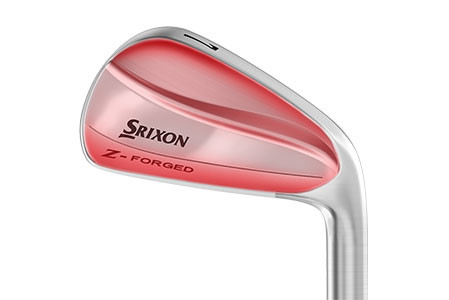
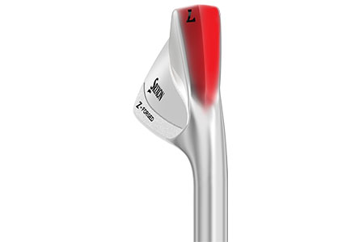
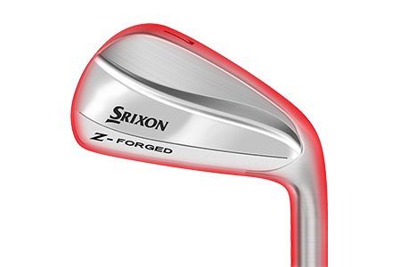

Z-FORGED IRONS
Providing both skilled amateurs and tour players with greater accuracy and consistent ball striking, the Srixon Z-FORGED Irons provide a muscle back blade offering with a knife-like address profile for maximum workability.
TECHNOLOGY
FMUSCLE BACK BLADE
A classic, forged blade shape optimised for maximum workability and unmatched feel at impact. Enjoy ultimate precision with this full back club head.
UPDATED TOUR V.T. SOLE
A newly redesigned Tour V.T. Sole provides even more consistent ball striking across a variety of turf conditions, while maintaining enough versatility to execute any shot. The rounded-out heel and toe also help to provide better distance control.
FORGED CONSTRUCTION
A body forged from a single billet of soft 1020 carbon steel offers less vibration and a better feel through impact. Also, more compact in size than other irons.

338 Speed Dimple Pattern
Offering less drag and more lift, the dimple design boosts overall distance and flies straight, even in the toughest wind conditions.
Z-Star xv Specs
| CONSTRUCTION | 4pc |
| COVER MATERIAL | Urethane |
| COVER THICKNESS | 0.020 in |
| COMPRESSION | 102 |
| DIMPLES | 338 |
SRIXON Z-STAR XV PRICE
50 € / 55 CHF / 500 SEK / 39.99 £